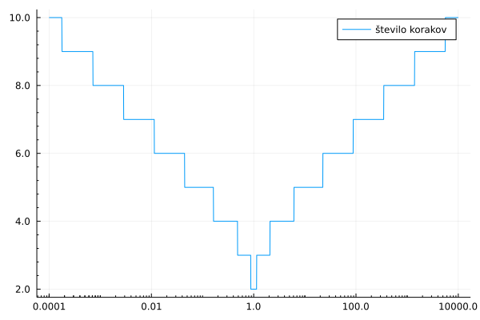
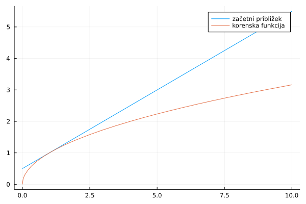
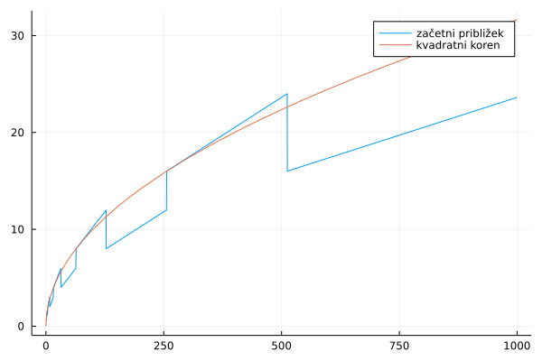
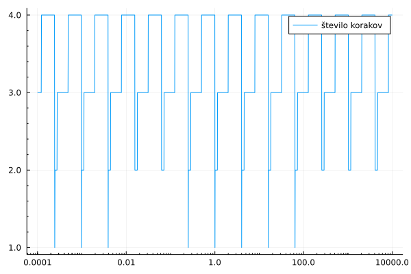
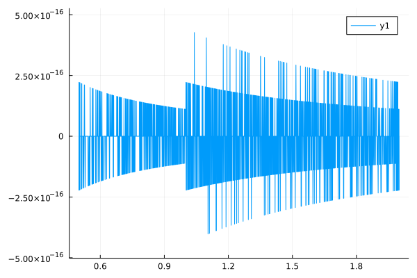
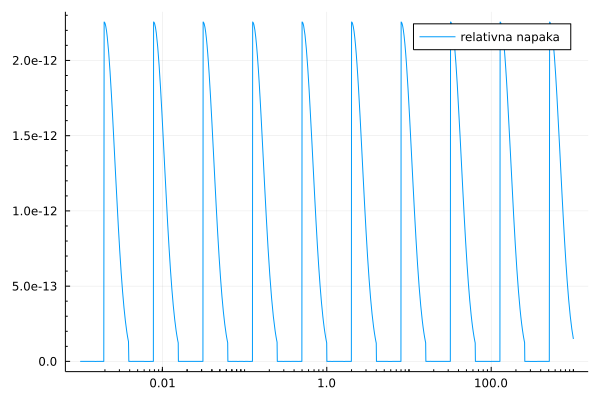

Računanje kvadratnega korena
Računalniški procesorji navadno implementirajo le osnovne številske operacije: seštevanje, množenje in deljenje. Za računanje drugih matematičnih funkcij mora nekdo napisati program.
Večina programskih jezikov vsebuje elementarne funkcije v standardni knjižnici. Tako tudi julia. Lokacijo metod, ki računajo kvadratni koren lahko dobite z ukazom methods(sqrt).
Naloga
Napiši funkcijo y = koren(x), ki bo izračunala približek za kvadratni koren števila x. Poskrbi, da bo rezultat pravilen na 10 decimalnih mest in da bo časovna zahtevnost neodvisna od argumenta x.
Računajne kvadratnega korena z babilonskim obrazcem
Z računajnjem kvadratnega korena so se ukvarjali pred 3500 leti v Babilonu. O tem si lahko več preberete v članku v reviji Presek. Moderna verzija metode računanja približka predstavlja rekurzivno zaporedje, ki konvergira k vrednosti kvadratnega korena danega števila $x$. Zaporedje približkov lahko izračunamo, tako da uporabimo rekurzivno formulo
\[a_{n+1} = \frac{1}{2}\cdot(a_n + \frac{x}{a_n}).\]
Če izberemo začetni približek, zgornja formula določa zaporedje, ki vedno konvergira bodisi k $\sqrt{x}$ ali $-\sqrt{x}$, odvisno od izbire začetnega približka. Poleg tega, da zaporedje hitro konvergira k limiti, je program, ki računa člene izjemno preprost. Poglejmo si primer kako izračunamo $\sqrt{2}$:
let
x = 1.5
for n = 1:5
x = (x + 2/x)/2
println(x)
end
end1.4166666666666665 1.4142156862745097 1.4142135623746899 1.414213562373095 1.414213562373095
Vidimo, da se približki začnejo ponavljati že po 4. koraku. To pomeni, da se zaporedje ne bo več spreminjalo in smo dosegli najboljši približek, kot ga lahko predstavimo z 64 bitnimi števili s plavajočo vejico.
Napišimo zgornji algoritem še kot funkcijo:
"""
koren_babilonski(x, x0, n)
Izračuna približek za koren števila `x` z `n` koraki babilonskega obrazca z začetnim približkom `x0`.
"""
function koren_babilonski(x, x0, n)
a = x0
for i = 1:n
a = (a + x/a)/2
end
return a
endMain.ex-koren.koren_babilonski
Preskusimo funkcijo na številu 3.
x = koren_babilonski(3, 1.7, 5)
println("Koren števila 3: $x")
println("Razlika z vgrajeno funkcijo: $(x-sqrt(3))")Koren števila 3: 1.7320508075688772 Razlika z vgrajeno funkcijo: 0.0
Metoda računanja kvadratnega korena z babilonskim obrazcem je poseben primer tangentne metode, ki je poseben primer metode fiksne točke. Obe metodi, si bomo podrobneje ogledali, v poglavju o nelinearnih enačbah.
Izbira začetnega približka
Funkcija koren_babilonski(x, x0, n) ni uporabna za splošno rabo, saj mora uporabnik poznati tako začetni približek, kot tudi število korakov, ki so potrebni, da dosežemo željeno natančnost. Da bi lahko funkcijo uporabljal kdor koli, bi morala funkcija sama izbrati začetni približek, kot tudi število korakov.
Kako bi učinkovito izbrali dober začetni približek? Dokazati je mogoče, da rekurzivno zaporedje konvergira ne glede na izbran začetni približek. Tako lahko uporabimo kar samo število $x$. Malce boljši približek dobimo s Taylorjevem razvojem korenske funkcije okrog števila 1
\[\sqrt{x} = 1 + \frac{1}{2}(x-1) + ... \approx 1/2 + x/2.\]
Število korakov lahko izberemo avtomatsko tako, da računamo nove približke, dokler relativna napaka ne pade pod v naprej predpisano mejo (v našem primeru bomo izbrali napako tako, da bomo dobili približno 10 pravilnih decimalnih mest). Program implementiramo kot novo metodo za funkcijo koren
"""
y, st_iteracij = koren_babilonski(x, x0)
Izračunaj vrednost kvadratnega korena danega števila `x` z babilonskim obrazcem z začetnim približkom `x0`. Funkcija vrne
vrednost približka za kvadratni koren in število iteracij (kolikokrat zaporedoma smo uporabili babilonski obrazec, da smo dobili zahtevano natančnost).
"""
function koren_babilonski(x, x0)
a = x0
it = 0
while abs(a^2 - x) > abs(x)*0.5e-11
a = (a + x/a)/2
it += 1
end
return a, it
end
y, it = koren_babilonski(10, 0.5 + 10/2)
println("Za izračun korena števila 10, potrebujemo $it korakov.")
y, it = koren_babilonski(1000, 0.5 + 1000/2)
println("Za izračun korena števila 1000, potrebujemo $it korakov.")Za izračun korena števila 10, potrebujemo 5 korakov. Za izračun korena števila 1000, potrebujemo 8 korakov.
Opazimo, da za večje število, potrebujemo več korakov. Poglejmo si, kako se število korakov spreminja, v odvisnosti od števila x.
using Plots
plot(x -> koren_babilonski(x, 0.5 + x/2)[2], 0.0001, 10000, xaxis=:log10, minorticks = true, formatter=identity, label="število korakov")
savefig("koren_stevilo_korakov.png")
Začetni približek $1/2 + x/2$ dobro deluje za števila blizu 1, če isto formulo za začetni približek preskusimo za večja števila, dobimo večjo relativno napako. Oziroma potrebujemo več korakov zanke, da pridemo do enake natančnosti. Razlog je v tem, da je $\frac{1}{2} + \frac{x}{2}$ dober približek za majhna števila, če pa se od števila 1 oddaljimo, je približek slabši, bolj kot smo oddaljeni od 1:
using Plots
plot(x -> 0.5 + x/2, 0, 10, label="začetni približek")
plot!(x -> sqrt(x), 0, 10, label="korenska funkcija")
savefig("koren_zacetni_priblizek.png")
Da bi dobili boljši približek, si pomagamo s tem, kako so števila predstavljena v računalniku. Realna števila predstavimo s števili s plavajočo vejico. Število je zapisano v obliki
\[ x = m 2^e\]
kjer je $0.5\le m<1$ mantisa, $e$ pa eksponent. Za 64 bitna števila s plavajočo vejico se za zapis mantise uporabi 53 bitov (52 bitov za decimalke, en bit pa za predznak), 11 bitov pa za eksponent (glej IEE 754 standard).
Koren števila $x$ lahko potem izračunamo kot
\[\sqrt{x} = \sqrt{m} 2^{e/2}\]
dober začetni približek dobimo tako, da $\sqrt{m}$ aproksimiramo razvojem v Taylorjevo vrsto okrog točke 1
\[\sqrt{m} \approx 1 + \frac{1}{2}(m-1) = 1/2 + m/2\]
Če eksponent delimo z 2 in zanemarimo ostanek $e = 2d + o$, lahko $\sqrt{2^e}$ približno zapišemo kot
\[\sqrt{2^e} \approx 2^d.\]
Celi del števila pri deljenju z 2 lahko dobimo z binarnim premikom v desno (right shift). Potenco števila $2^n$, pa z binarnim premikom števila 1 v levo za $n$ mest. Tako lahko zapišemo naslednjo funckijo za začetni približek:
"""
zacetni_priblizek(x)
Izračunaj začetni približek za tangentno metodo za računanje kvadratnega korena števila `x`.
"""
function zacetni_priblizek(x)
d = exponent(x) >> 1 # desni premik oziroma deljenje z 2
m = significand(x)
if d < 0
return (0.5 + 0.5*m) / (1 << -d)
end
return (0.5 + 0.5*m) * (1 << d)
endMain.ex-koren.zacetni_priblizek
Primrjajmo izboljšano verzijo začetnega približka s pravo korensko funkcijo:
using Plots
plot(zacetni_priblizek, 0, 1000, label="začetni približek")
plot!(sqrt, 0, 1000, label="kvadratni koren")
savefig("koren_izboljsan_zp.png")
Oglejmo si sedaj število korakov, če uporabimo izboljšani začetni približek.
using Plots
plot(x -> koren_babilonski(x, zacetni_priblizek(x))[2], 0.0001, 10000, xaxis=:log10, minorticks = true, formatter=identity, label="število korakov")
savefig("koren_stevilo_korakov_izp.png")
Opazimo, da se število korakov ne spreminja več z naraščanjem argumenta, to pomeni, da bo časovna zahtevnost tako implemetirane korenske funkcije konstantna in neodvisna od izbire argumenta.
using Plots
rel_napaka(x) = (koren_babilonski(x, 0.5 + x/2, 4)^2 - x)/x
plot(rel_napaka, 0.5, 2)
savefig("napaka_koren_babilonski.png")
Sedaj lahko sestavimo funkcijo za računanje korena, ki potrebuje le število in ima konstantno časovno zahtevnost
"""
y = koren(x)
Izračunaj kvadratni koren danega števila `x` z babilonskim obrazcem.
"""
function koren(x)
y = zacetni_priblizek(x)
for i = 1:4
y = (y + x / y)/2
end
return y
endMain.ex-koren.koren
Preverimo, da je relativna napaka neodvisna od izbranega števila, prav tako pa za izračun potrebujemo enako število operacij.
plot(x -> (koren(x)^2 - x)/x, 0.001, 1000.0, xaxis=:log, minorticks = true, formatter=identity, label="relativna napaka")
savefig("koren_relativna_napaka.png")
Hitro računanje obratne vrednosti kvadratnega korena
Pri razvoju računalniških iger, ki poskušajo verno prikazati 3 dimenzionalni svet na zaslonu, se veliko uporablja normiranje vektorjev. Pri operaciji normiranja je potrebno komponente vektorja deliti s korenom vsote kvadratov komponent. Kot smo spoznali pri računanju kvadratnega korena z babilonskim obrazcem, je posebej problematično poiskati ustrezen začetni približek, ki je dovolj blizu pravi rešitvi. Tega problema so se zavedali tudi inžinirji igre Quake, ki so razvili posebej zvit, skoraj magičen način za dober začetni približek. Metoda uporabi posebno vrednost 0x5f3759df, da pride do začetnega približka, nato pa še en korak tangentne metode. Več o računanju obratne vrednosti kvadratnega korena.